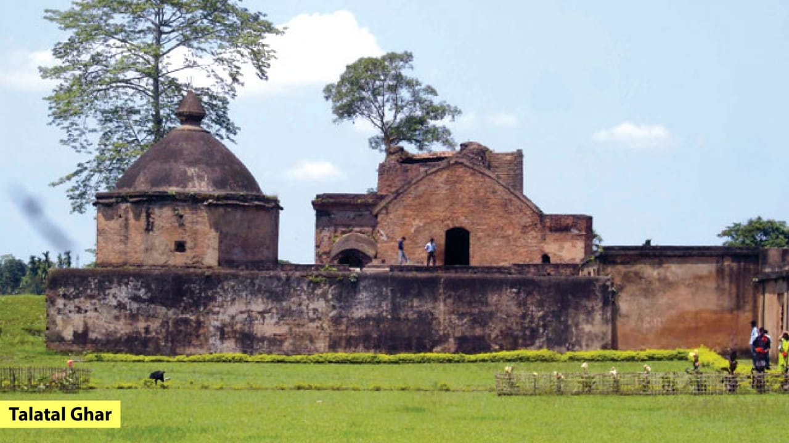

About Shiva Dol: Shiva
dol (meaning the temple of the Lord Shiva) is a group of structures
comprising three Hindu temples of Sivadol, Vishnudol (meaning temple
of the Lord Vishnu) and Devidol (means temple of the Goddess Devi
Durga in the local Assamese language) shrines, and a museum. These
are located on the banks of the Sivasagar ("the ocean of the god
Shiva") tank, also known as the Borpukhuri tank, in the heart of
Sivasagar, in the Indian state of Assam. The tank was constructed
between 1731 and 1738 and the temples were built in 1734 by Bar Raja
Ambika, queen of Ahom king Swargadeo Siva Singha
(1714–1744).[1][2][3][4][5] The height of the Sivadol (dol means
temple in Assamese) is 104 feet (32 m) and the perimeter is 195 feet
(59 m) at the base. It is crowned with an 8-foot (2.4 m) high
golden-dome.The Sivadol or Shiva temple, built in the Shikhara
architecture[7] (more specifically Ahom temple architecture), has a
central tower which is said to be the tallest Shiva temple tower in
India at a height of 104 feet (32 m).[1] The base of the temple
measures 195 ft (59 m) in circumference.[1] The temple is built with
stone and bricks. Inside the Garbhagriha (sanctum sanctorum), the
Shiva Linga (aniconic symbol of Shiva) is deified, which is in a
reverse setting. The Shikhara or Vimana (temple tower), which rises
above the sanctum sanctorum, has a four-tiered, 8 feet (2.4 m)
mastaka and is crowned by a kalasha made of gold. The tower itself
is built with parallel ridges and furrows.
